This document provides complete, rigorous, and diagrammatically illustrated answers for the course question bank covering Data Engineering Fundamentals, ETL/ELT Architectures, and Apache Kafka Distributed Streaming.
Question:
Explain the Data Engineering Lifecycle with a suitable diagram. Describe the major stages involved from data generation to data serving.
Data Engineering is the engineering branch focused on designing, building, and operating the infrastructure and systems that collect, store, process, and deliver data reliably and at scale. A Data Engineer builds the scalable "pipes" through which raw, scattered, and messy data flows and is converted into a clean, query-ready state for analysts, data scientists, machine learning models, and operational business applications.
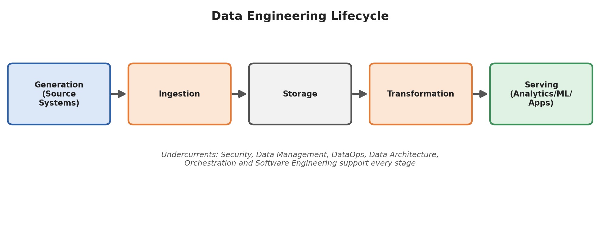
Figure 1.1: The end-to-end Data Engineering Lifecycle showing sequential data flow from Generation to Serving, supported by cross-cutting undercurrents.
The lifecycle describes every stage that data passes through from origin to business impact:
Data is continuously created across diverse external and internal source applications. Data engineers do not typically control generation systems, but must integrate with them reliably: * Transactional Databases (OLTP): PostgreSQL, MySQL, Oracle capturing operational business transactions. * Web and Mobile Client Applications: User clicks, session logs, page views, search interactions, and cart updates. * IoT Sensors & Telemetry: GPS tracking, temperature meters, smart grid devices, and hardware health logs. * Third-Party APIs & SaaS Platforms: Payment gateways (Stripe, Razorpay), CRM tools (Salesforce), advertising feeds.
Ingestion is the process of collecting raw data from source systems and transporting it into the organization's data platform. * Batch Ingestion: Data is extracted at scheduled intervals (hourly, nightly) in bounded chunks using tools like Apache Sqoop, Airbyte, or custom JDBC extracts. * Streaming Ingestion: Events are ingested continuously in real time, record-by-record, using distributed message streaming platforms such as Apache Kafka, AWS Kinesis, or Google Cloud Pub/Sub. * Key Challenges: Handling network failures, API rate limits, backpressure from slow consumers, schema changes, and avoiding duplicate ingestion.
Storage provides persistent, reliable, and accessible storage for raw, staging, and processed data. * Data Warehouses: Centralized, structured, columnar repositories optimized for fast analytical SQL queries (e.g., Snowflake, Amazon Redshift, Google BigQuery). * Data Lakes: Scalable distributed object stores holding raw, semi-structured, and unstructured data in open columnar formats like Parquet, ORC, Avro, and Delta Lake (e.g., Amazon S3, Azure ADLS Gen2, HDFS). * Key Decisions: Partitioning schemas, compression codecs (Snappy, Zstandard), data lifecycle retention, and storage cost tiers (hot vs. cold storage).
Transformation converts raw, untamed data into structured, clean, and modeled analytical datasets. * Data Cleansing: Handling missing attributes, deduplication, correcting data types, and filtering corrupted records. * Business Logic & Modeling: Creating Fact and Dimension tables, computing KPIs, aggregating metrics across rolling time windows, and joining disparate datasets. * Tools: Apache Spark, dbt (data build tool), SQL engines, Trino/Presto.
The final stage where processed data delivers measurable business value to downstream consumers. * Business Intelligence (BI) & Analytics: PowerBI, Tableau, Looker dashboards for operational reporting and executive KPIs. * Machine Learning & AI: Feature stores (Feast) and feature pipelines feeding training models and inference engines. * Reverse ETL & Operational Analytics: Writing transformed analytical metrics back into operational applications (e.g., updating customer health scores in Salesforce or Zendesk). * Operational Microservices: Exposing processed analytical records to web and mobile apps via low-latency REST/gRPC APIs.
Undercurrents are foundational practices that support and cut across every stage of the lifecycle: 1. Security & Privacy: End-to-end encryption (TLS in transit, AES-256 at rest), Role-Based Access Control (RBAC), masking Personally Identifiable Information (PII), and regulatory compliance (GDPR, CCPA, HIPAA). 2. Data Management & Governance: Data catalogs, automated data lineage tracking, metadata management, and data quality standards. 3. DataOps & Observability: Continuous Integration & Continuous Delivery (CI/CD) for data pipelines, automated testing, log aggregation, and latency alerting. 4. Data Architecture: Evaluating architectural tradeoffs: batch vs. streaming, centralized vs. decentralized (Data Mesh), and cloud vs. hybrid storage. 5. Orchestration: Managing workflow task dependencies, execution ordering, retries, and SLA monitoring (e.g., Apache Airflow, Dagster). 6. Software Engineering: Applying software engineering best practices: version control (Git), unit testing, modular coding, and idempotent pipeline execution.
Consider an online e-commerce platform during a flash sale: * Generation: Millions of customers place orders on mobile apps; MySQL databases commit transactions. * Ingestion: Kafka ingests clickstream and order events at 50,000 events/sec via Debezium CDC. * Storage: Raw events land immediately in Amazon S3 (Data Lake) as snappy-compressed Parquet files. * Transformation: Apache Spark and dbt models calculate regional hourly revenues, clean invalid addresses, and join order items with product catalogs. * Serving: Tableau dashboards display live executive sales KPIs, while a fraud detection ML model evaluates chargeback risks in under 100 milliseconds.
Question:
Explain the three stages of ETL (Extract, Transform and Load). Also differentiate between ETL and ELT based on transformation location and suitable use cases.
ETL (Extract, Transform, Load) is the foundational data integration pipeline pattern used to pull raw data from operational systems, transform it on a dedicated processing layer, and load it into a centralized analytical data warehouse.
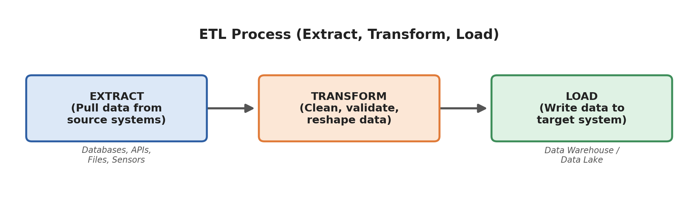
Figure 2.1: Sequential stages of the traditional ETL pipeline.
updated_at), or log-based replication.The fundamental distinction between ETL and ELT is where and when the transformation takes place:
| Feature / Aspect | ETL (Extract - Transform - Load) | ELT (Extract - Load - Transform) |
|---|---|---|
| Transformation Location | Before loading, on a dedicated intermediate staging/ETL server. | After loading, directly inside the target cloud data warehouse/lake. |
| Best Suited For | On-premises systems, smaller datasets, rigid relational schemas, strict privacy rules requiring PII masking before storage. | Big Data, cloud data platforms, fast-changing schemas, unstructured/semi-structured data lakes. |
| Speed of Ingestion / Loading | Slower: Loading is blocked until computationally heavy transformations finish. | Faster: Raw data is immediately dumped into the target warehouse; transformation happens later. |
| Compute & Storage Model | Compute and storage are tightly coupled; heavy compute burden on the ETL staging server. | Decoupled cloud compute and storage; leverages elastic, massively parallel processing (MPP). |
| Schema Paradigm | Schema-on-Write: Schema must be strictly defined and validated before loading. | Schema-on-Read / Hybrid: Raw data is preserved, allowing developers to define/modify schemas later. |
| Raw Data Availability | Raw data is often discarded post-transformation to save disk space. | Raw historical data is permanently stored, allowing re-running transformations whenever logic changes. |
| Common Tools | Informatica PowerCenter, Microsoft SSIS, Talend Open Studio, IBM DataStage. | Snowflake, Google BigQuery, Amazon Redshift, Databricks, dbt (data build tool). |
ETL Paradigm (Python / PySpark Staging Script):
# Extract from Postgres
raw_df = spark.read.jdbc(url=pg_url, table="orders", properties=props)
# Transform in Memory on ETL Server
clean_df = raw_df.filter(raw_df.amount > 0) \
.withColumn("order_date", to_date(raw_df.timestamp)) \
.dropDuplicates(["order_id"])
# Load Cleaned Data into Target Warehouse
clean_df.write.mode("append").parquet("s3://warehouse/orders_clean/")
ELT Paradigm (SQL / dbt inside Snowflake/BigQuery):
-- Raw data already loaded directly into raw_orders table
-- Transform in-place using warehouse compute power
CREATE OR REPLACE TABLE analytics.fact_orders AS
SELECT
order_id,
customer_id,
DATE(order_timestamp) AS order_date,
amount,
amount * 0.18 AS estimated_tax
FROM raw_data.raw_orders
WHERE amount > 0;
Question:
Explain the ETL architecture and workflow with a neat diagram. Describe the role of the data sources, staging area, transformation engine, target data warehouse, and orchestration layer.
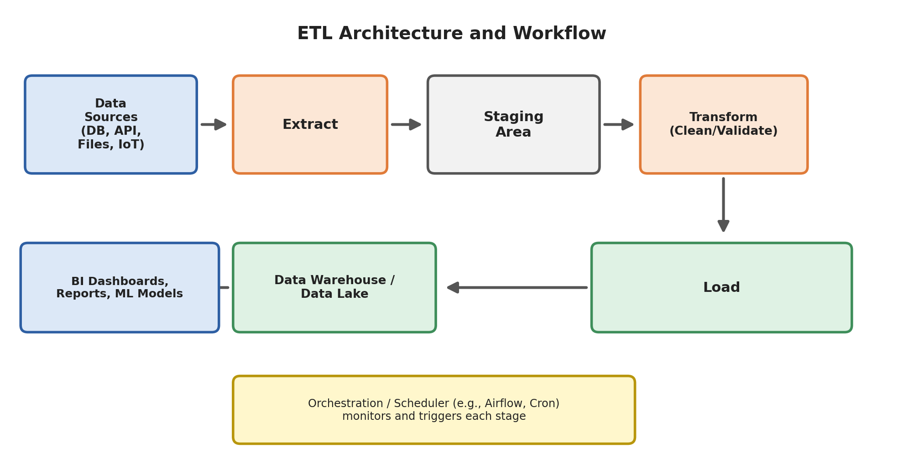
Figure 3.1: Complete architecture and components of an end-to-end ETL system.
from airflow import DAG
from airflow.operators.python import PythonOperator
from datetime import datetime, timedelta
default_args = {
'owner': 'data_engineer',
'retries': 3,
'retry_delay': timedelta(minutes=5),
}
with DAG(
dag_id='daily_ecommerce_etl',
default_args=default_args,
start_date=datetime(2026, 1, 1),
schedule_interval='@daily',
catchup=False
) as dag:
def extract_orders():
print("Extracting records from MySQL to S3 Staging Area...")
def transform_orders():
print("Cleaning missing fields, joining with product catalogue...")
def load_warehouse():
print("Upserting transformed facts into Snowflake tables...")
def notify_success():
print("Alerting operations team: Pipeline finished successfully.")
task_extract = PythonOperator(task_id='extract', python_callable=extract_orders)
task_transform = PythonOperator(task_id='transform', python_callable=transform_orders)
task_load = PythonOperator(task_id='load', python_callable=load_warehouse)
task_notify = PythonOperator(task_id='notify', python_callable=notify_success)
# Dependency Chain (DAG)
task_extract >> task_transform >> task_load >> task_notify
Question:
Differentiate between OLTP and OLAP systems with respect to purpose, type of data, query type, database design, and examples.
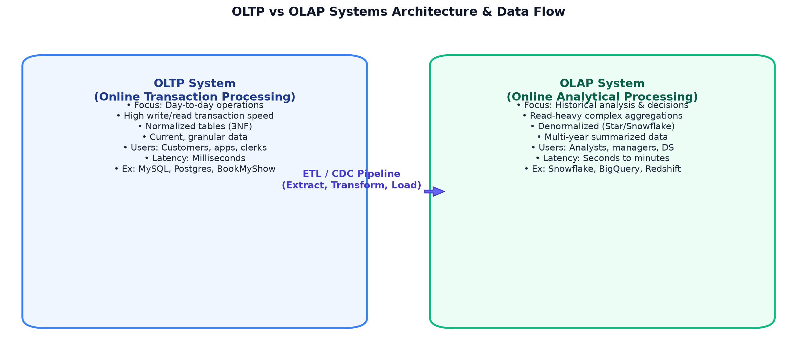
Figure 4.1: Structural contrast between operational OLTP systems and analytical OLAP warehouses.
| Feature / Dimension | OLTP (Online Transaction Processing) | OLAP (Online Analytical Processing) |
|---|---|---|
| Primary Purpose | Manage and record day-to-day transactional business operations. | Analyze historical trends, aggregate metrics, and support business intelligence. |
| Target Users | Customers, clerks, operational employees, web/mobile applications. | Business analysts, data scientists, executives, management teams. |
| Type of Data | Current, up-to-the-second, granular, highly detailed records. | Multi-year historical, consolidated, aggregated, summarized records. |
| Query Type | Simple, fast lookups and atomic writes (INSERT, UPDATE, DELETE). |
Complex, compute-intensive read queries with aggregations (SUM, AVG, GROUP BY). |
| Database Design | Highly Normalized (3NF) to minimize redundancy and maximize write speed. | Denormalized (Star / Snowflake Schema) to minimize joins and maximize read speed. |
| Read vs Write Pattern | High frequency of both reads and writes; balanced I/O. | Heavily read-dominated; writes occur in periodic scheduled batch loads. |
| Response Latency | Milliseconds ($< 50\text{ ms}$). | Seconds to minutes (depending on data volume and query complexity). |
| Storage Architecture | Row-oriented storage (efficient for accessing single whole rows). | Column-oriented storage (efficient for scanning selected columns over billions of rows). |
| Data Scope & Volume | Gigabytes of active, live data. | Terabytes to Petabytes of accumulated historical data. |
| Hardware Focus | High transaction throughput, write-ahead logging, fast disk write latency. | Massively Parallel Processing (MPP), distributed query execution, large memory/RAM. |
| Real-World Examples | Booking a movie ticket on BookMyShow, ATM cash withdrawal, e-commerce checkout. | Generating a 12-month regional sales trend report, calculating quarterly customer churn. |
| Common Tools | MySQL, PostgreSQL, Oracle DB, Microsoft SQL Server. | Snowflake, Amazon Redshift, Google BigQuery, ClickHouse. |
OLTP Query (Fast, Point-Update):
-- Reserving seat 42B for show 501
UPDATE ticket_reservations
SET status = 'CONFIRMED', updated_at = NOW()
WHERE user_id = 9812 AND show_id = 501;
OLAP Query (Broad Analytical Scan with Aggregation):
-- Analyzing annual revenue per movie genre across western states
SELECT
m.genre,
d.year,
SUM(f.ticket_price) AS total_revenue,
AVG(f.ticket_price) AS avg_ticket_price
FROM fact_ticket_sales f
JOIN dim_movie m ON f.movie_id = m.movie_id
JOIN dim_theater t ON f.theater_id = t.theater_id
JOIN dim_date d ON f.date_id = d.date_id
WHERE t.state IN ('Maharashtra', 'Gujarat', 'Goa')
GROUP BY m.genre, d.year
ORDER BY total_revenue DESC;
Question:
Explain Star Schema and Snowflake Schema in data warehousing. Draw suitable diagrams and mention their key differences.
In data warehousing, analytical schemas organize relational tables into two primary types:
* Fact Table: The central table that stores quantitative, numerical measurements of a business event (e.g., sales_amount, quantity_sold, tax_paid). It also holds foreign keys pointing to dimension tables. Fact tables have a large number of rows and few columns.
* Dimension Table: Contextual tables containing descriptive textual attributes (e.g., customer details, product categories, calendar dates) that provide the "who, what, where, and when" context for fact measurements.
In a Star Schema, a central fact table connects directly to multiple denormalized dimension tables. The dimension tables are flat (not broken down into sub-tables), giving the schema a star-like structure.
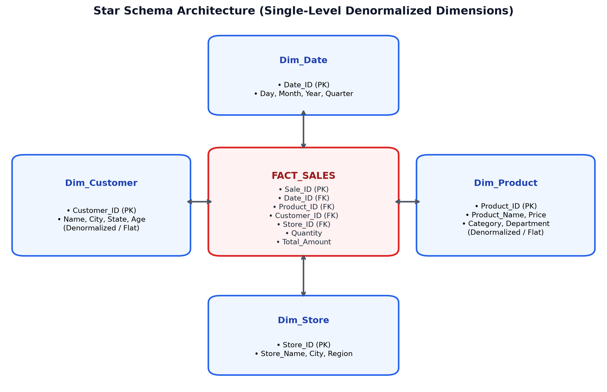
Figure 5.1: Star Schema structure with a central Fact table and single-level, denormalized Dimension tables.
Fact_Sales: Sale_ID, Product_ID (FK), Customer_ID (FK), Date_ID (FK), Store_ID (FK), Quantity, Total_AmountDim_Product: Product_ID, Product_Name, Category, Department, Price (Flat, denormalized).Dim_Customer: Customer_ID, Customer_Name, City, State, Country, AgeA Snowflake Schema is an extension of the Star Schema where dimension tables are further normalized into multiple related sub-dimension tables. This splits hierarchical attributes into separate tables, creating a branched structure resembling a snowflake.
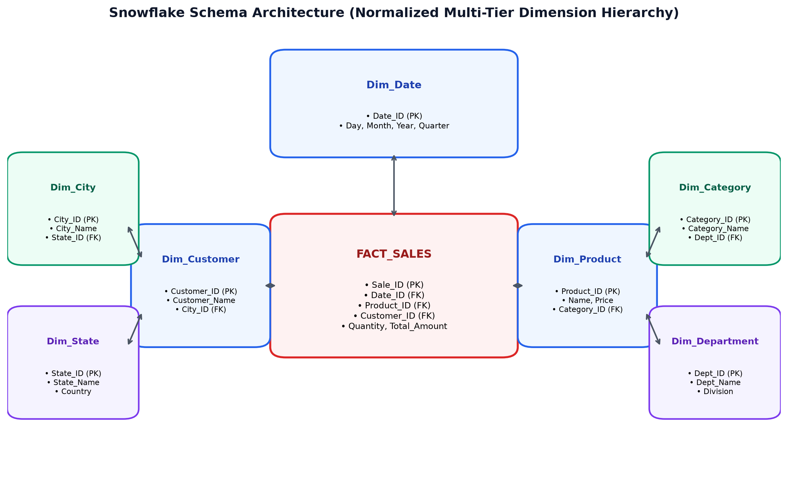
Figure 5.2: Snowflake Schema structure with normalized, multi-tier dimension hierarchies.
Fact_Sales connects to Dim_Product.Dim_Product holds Category_ID (FK) and connects to Dim_Category.Dim_Category holds Department_ID (FK) and connects to Dim_Department.Fact_Sales $\rightarrow$ Dim_Product $\rightarrow$ Dim_Category $\rightarrow$ Dim_Department), which can slow query execution and make SQL queries more complex.| Feature | Star Schema | Snowflake Schema |
|---|---|---|
| Structure | Central fact table surrounded by single-level, flat dimension tables. | Central fact table surrounded by multi-level, normalized dimension hierarchies. |
| Normalization | Denormalized: Dimensions intentionally retain duplicate attribute values. | Normalized: Dimensions are split into 2NF/3NF sub-tables to remove redundancy. |
| Joins Needed | Fewer: Every dimension is joined directly to the fact table with a single join. | More: Queries must join through multiple levels of sub-dimension hierarchies. |
| Query Performance | Faster: Simple joins allow database query planners to optimize table scans. | Slightly Slower: Multi-table joins increase CPU overhead and query execution time. |
| Storage Overhead | Consumes slightly more disk space due to repeated text values in dimensions. | Consumes less disk space because repeated values are normalized into lookups. |
| Schema Maintenance | Updates to an attribute require updating multiple rows in the dimension table. | Updates to an attribute require updating only a single row in the normalized lookup table. |
| Ease of Use | Simple and intuitive for business users and BI analysts to query. | More complex to navigate; requires understanding parent-child foreign key hierarchies. |
| Best Suited For | Fast analytical dashboards, data marts, and modern columnar cloud data warehouses. | Very large dimension datasets where storage optimization or strict normalization is required. |
valid_from, valid_to, and is_current = TRUE. Complete historical tracking is preserved.Question:
Explain how Apache Kafka solves the $N \times M$ integration problem in modern data systems. Compare the point-to-point integration model with the Kafka-based $N + M$ model and mention its key benefits.
In point-to-point data architectures, every source system connects directly to every target application that requires its data. As organizations add new source services and analytical destinations, the number of point-to-point connections grows multiplicatively:
$$\text{Connections} = N \times M$$
where $N$ is the number of source applications and $M$ is the number of destination systems.
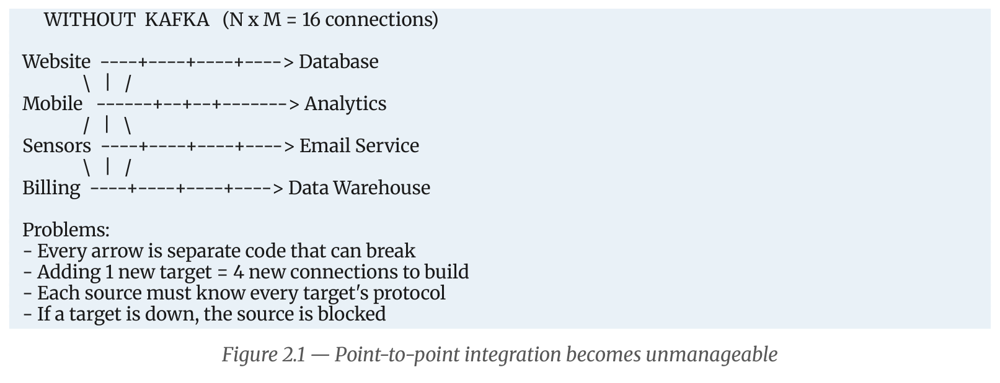
Figure 6.1: The unmanageable spaghetti architecture of point-to-point connections ($N \times M = 16$).
Apache Kafka replaces this point-to-point mesh with a centralized, distributed event-streaming backbone. * Every source system writes its events once to Kafka. * Every target system reads independently from Kafka at its own pace. * The number of connections scales linearly:
$$\text{Connections} = N + M$$
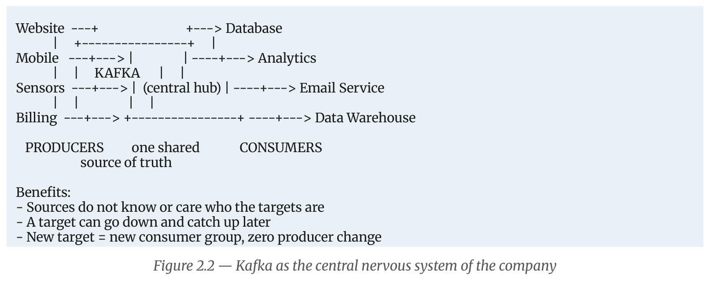
Figure 6.2: Kafka acting as the central nervous system, reducing complexity from $N \times M$ to $N + M$.
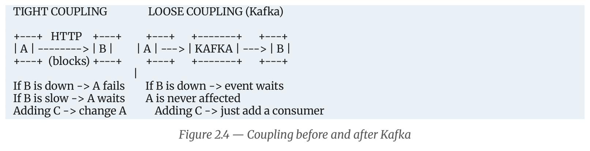
Figure 6.3: Architectural decoupling achieved by introducing Kafka between services.
| Metric / Aspect | Point-to-Point Integration ($N \times M$) | Kafka Event Streaming ($N + M$) |
|---|---|---|
| Number of Connections | Exponential growth: $N \times M$ pipelines. | Linear growth: $N + M$ pipelines. |
| Adding a New Target | Requires building $N$ new connections from every source. | Requires adding 1 consumer connection to Kafka; zero source code changes. |
| Coupling Level | Tightly coupled in availability, speed, and data format. | Fully decoupled; systems interact only through Kafka topics. |
| Impact of Target Downtime | Sources fail, block, or drop data. | Events safely accumulate on Kafka's disk log; the target catches up when it recovers. |
| Data Replayability | Not supported; messages cannot be re-sent without manual work. | Fully supported; consumers can reset their offset and reprocess past events. |
In 2010, LinkedIn operated dozens of point-to-point systems connecting web apps to ActiveMQ, Oracle, Search (Lucene), and Hadoop. Each queue collapsed under high event throughput. Jay Kreps, Neha Narkhede, and Jun Rao created Apache Kafka to act as a unified, high-throughput append-only distributed log, enabling millions of user-activity messages per second.
Question:
Explain the Data Cleaning and Data Transformation processes. Discuss different techniques used for handling missing values, duplicates, inconsistent formats, outliers, normalization, aggregation, and joining data.
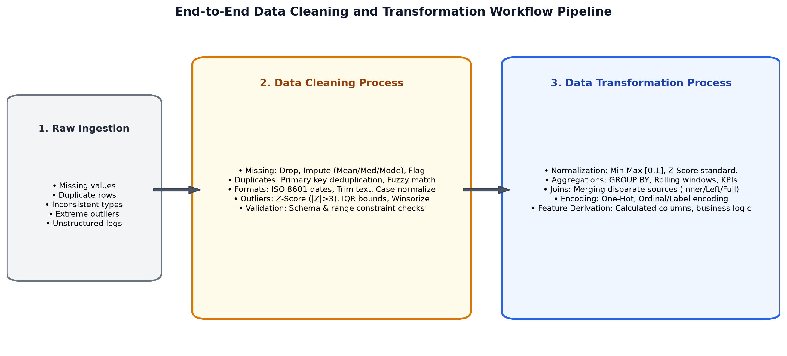
Figure 7.1: Pipeline flow from raw ingestion through cleaning and transformation stages.
user_id, transaction_id).City or Country).is_income_missing = 1) and filling the missing field with a default value, preserving the missingness signal for machine learning algorithms.# Python Implementation of Imputation
df['income_imputed'] = df['income'].fillna(df['income'].median())
df['is_income_missing'] = df['income'].isnull().astype(int)
df['city'] = df['city'].fillna('Unknown')
DROP DUPLICATES or SELECT DISTINCT.sql
SELECT * FROM (
SELECT *, ROW_NUMBER() OVER (PARTITION BY order_id ORDER BY event_time DESC) as rn
FROM orders_staging
) WHERE rn = 1;DD/MM/YYYY, MM-DD-YYYY, Unix epoch timestamps) and converting them into a single standard ISO 8601 format (YYYY-MM-DDTHH:MM:SSZ).UPPER, lower, or Title Case)."M", "Male", "male", "MALE" $\rightarrow$ "Male").GROUP BY:Payment_Mode: [UPI, Card, Cash]).Priority: [Low=1, Medium=2, High=3]).Question:
Explain Batch Processing and Real-Time Processing. Compare them based on data handling, latency, use cases, common tools, and resource requirements.
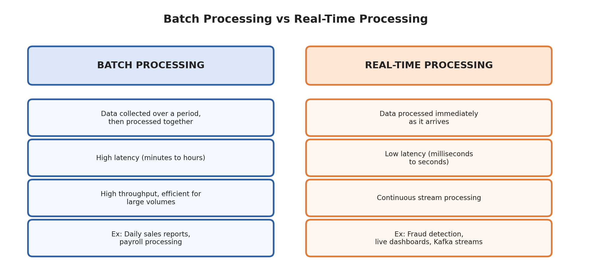
Figure 8.1: Conceptual comparison of Batch Processing vs Real-Time Stream Processing.
| Feature / Dimension | Batch Processing | Real-Time (Stream) Processing |
|---|---|---|
| Data Handling | Processed in large, fixed-size, bounded chunks/batches. | Processed continuously as an unbounded stream, record-by-record. |
| Latency | High: Minutes, hours, or overnight batch delays. | Ultra-Low: Milliseconds to seconds. |
| Data Scope | Bounded: All dataset records are available before processing starts. | Unbounded: Data arrives indefinitely; results update continuously. |
| Use Cases | Payroll generation, end-of-day banking reconciliation, monthly billing, model re-training. | Credit card fraud detection, live system health monitoring, GPS tracking, real-time push alerts. |
| Common Tools | Apache Sqoop, Apache Hadoop MapReduce, Apache Spark (Batch), traditional ETL tools. | Apache Kafka, Apache Flink, Apache Spark Streaming, Apache Samza. |
| Resource Usage | Bursty & Scheduled: Compute clusters spin up on schedule, run at full utilization, and shut down. | Continuous / Always-On: Requires dedicated 24/7 cluster infrastructure to process events as they arrive. |
| Throughput | High overall throughput when processing large historical datasets. | High throughput per event; scales horizontally via partition distribution. |
| Error Recovery | Simple: Re-run the entire batch job from the beginning upon failure. | Complex: Requires distributed checkpointing, state recovery, and offset tracking. |
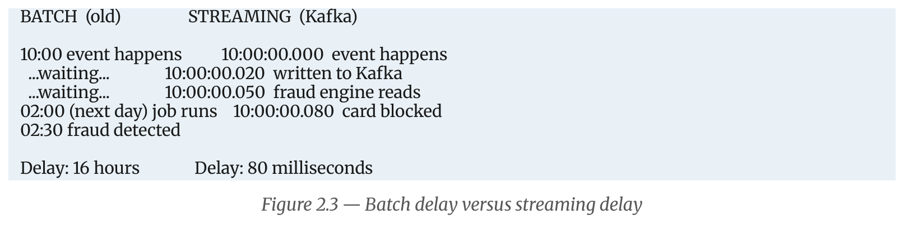
Figure 8.2: Timeline comparison showing why real-time streaming is essential for fraud prevention.
Question:
Explain the notebook model of Apache Kafka. Describe the roles of producers, consumers, partitions, offsets, replicas, and retention.
To understand Apache Kafka's architecture, consider the analogy of a long physical notebook kept on a library desk:
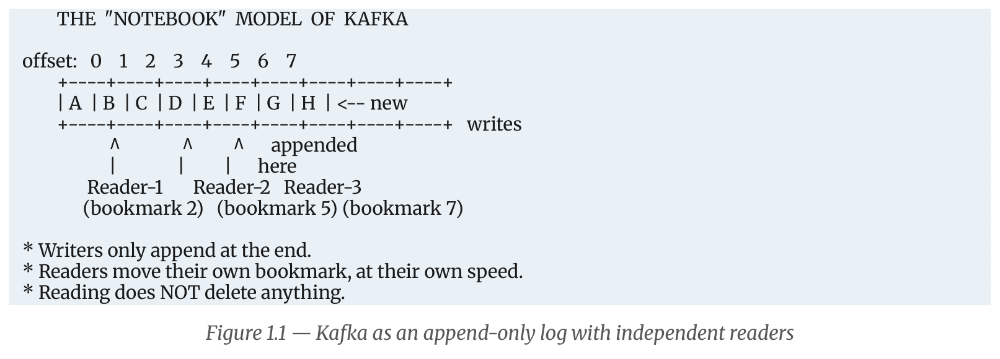
Figure 9.1: Kafka as an append-only log with independent readers maintaining bookmarks.
| Notebook Concept | Kafka Concept | Architectural Definition |
|---|---|---|
| The Notebook | Partition | The physical, append-only log file stored on broker disk. |
| Line Number | Offset | Sequential 64-bit integer identifying each record in a partition. |
| Writers | Producers | Applications that publish and append records to Kafka topics. |
| Readers | Consumers | Applications that pull and read records from partitions. |
| Bookmark | Committed Offset | The consumer's saved progress point stored in __consumer_offsets. |
| Photocopies | Replicas | Redundant copies of a partition stored on other brokers. |
| Discarding Old Pages | Retention Policy | Scheduled background cleanup deleting data older than retention.ms or larger than retention.bytes. |
(Topic, Partition, Offset) uniquely identifies any record in the cluster.log.retention.hours = 168) or size limits (log.retention.bytes)./kafka-logs/orders-0/
│── 00000000000000000000.log <- Segment file storing actual binary records
│── 00000000000000000000.index <- Index mapping offset -> byte position in .log
│── 00000000000000000000.timeindex <- Index mapping timestamp -> offset
│── 00000000000000123456.log <- Active segment receiving current writes
└── leader-epoch-checkpoint
Question:
What is a Kafka event/record? Explain the important components of a Kafka record, including key, value, timestamp, headers, partition, and offset.
An event (also called a record or message) is the fundamental, atomic unit of data in Apache Kafka. It represents an immutable statement of fact—a record that an action occurred in the past (e.g., OrderPlaced, UserRegistered, PaymentFailed). Because past events cannot be changed, Kafka records are append-only and cannot be modified once written.
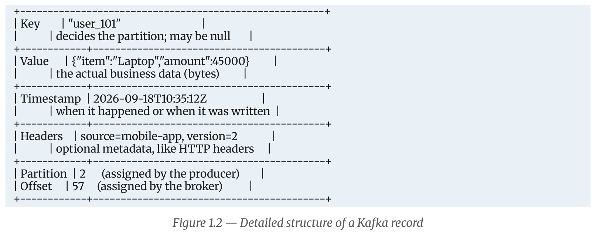
Figure 10.1: Internal fields and layout of an individual Kafka record.
null. Stored as a raw byte array.user_101) land in the same partition, ensuring strict chronological order for that entity.byte[]).CreateTime: Set by the producer application when the record is created.LogAppendTime: Overwritten by the broker when it appends the record to disk..timeindex), and windowed stream operations in Kafka Streams and Flink.SIZE COMPARISON OF THE SAME RECORD
JSON: {"orderId":"A1","customer":"user_101","item":"Laptop","amount":45000.0} -> ~78 bytes
Avro: [magic][schemaID][A1|user_101|Laptop|45000] -> ~28 bytes (-64%)
Protobuf:[magic][schemaID][1:A1][2:user_101]... -> ~26 bytes (-67%)
0x00)Question:
Explain the Kafka architecture with a suitable diagram. Describe the roles of Kafka brokers, topics, partitions, producers, and consumers.
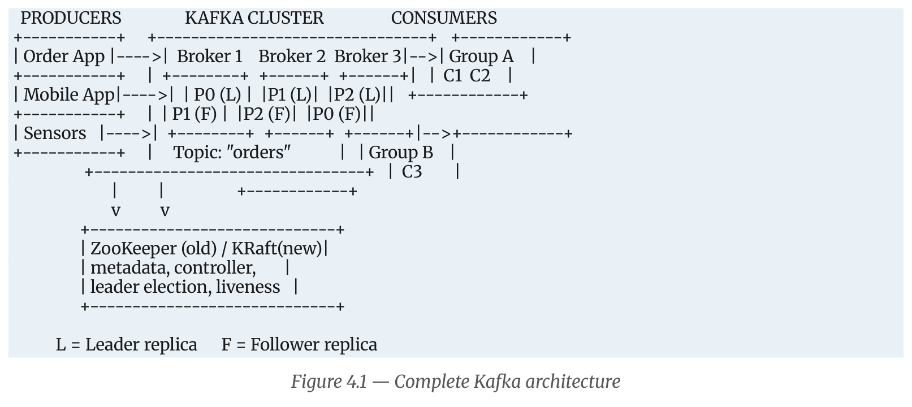
Figure 11.1: Complete architecture of Apache Kafka showing Producers, Brokers, Partitions, and Consumer Groups.
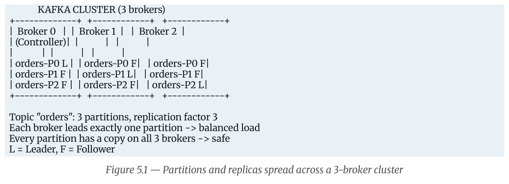
Figure 11.2: Distribution of partition leaders and followers across a 3-broker cluster.
.log, .index, .timeindex).shop.order.created).RecordAccumulator).poll()).__consumer_offsets topic.@metadata topic, removing external dependencies.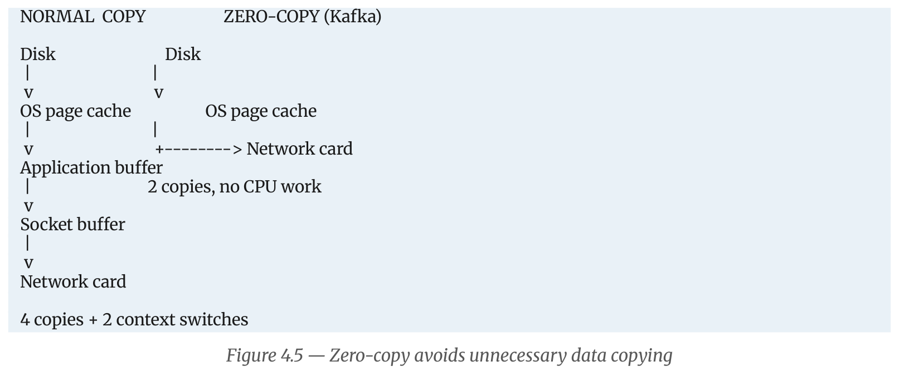
Figure 11.3: Zero-copy transfer using the sendfile() OS system call bypassing application buffers.
sendfile() Linux kernel system call, data goes straight from OS page cache into the network socket buffer without copying into JVM heap space.Question:
What are Kafka Consumer Groups? Explain how consumer groups help in parallel processing and how partitions are assigned among consumers.
A Consumer Group is a set of consumer instances sharing the same group.id that cooperate to consume records from a topic.
* Kafka divides the partitions of the subscribed topic among the members of the group, so each member processes a distinct subset of the data.
* It combines two traditional messaging patterns:
1. Queueing (Load Balancing): Within a single group, each message is processed by only one consumer. Adding consumers increases processing capacity.
2. Publish-Subscribe (Fan-out): Multiple consumer groups can subscribe to the same topic. Each group receives its own independent copy of every message.
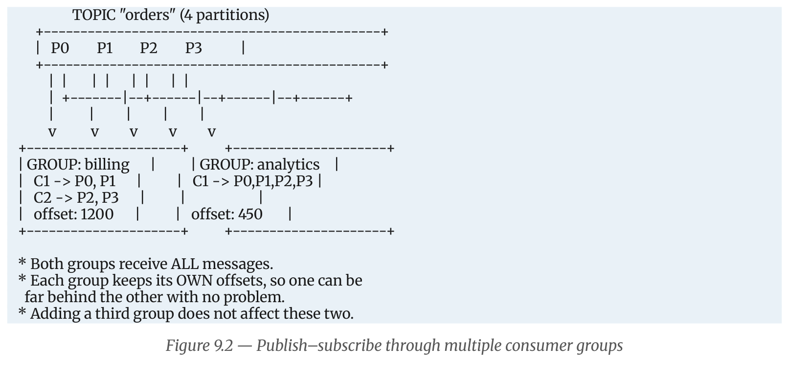
Figure 12.1: Two independent consumer groups (Billing and Analytics) reading the same topic with separate offsets.
Rule 1: Within a group, each partition is assigned to EXACTLY ONE consumer.
Rule 2: A single consumer CAN read multiple partitions.
Rule 3: If Consumers > Partitions, excess consumers remain completely IDLE.
Rule 4: The maximum useful parallelism of a group EQUALS the number of partitions.
Rule 5: Different consumer groups are 100% independent with separate offsets.
Consider a topic orders with 4 Partitions (P0, P1, P2, P3):
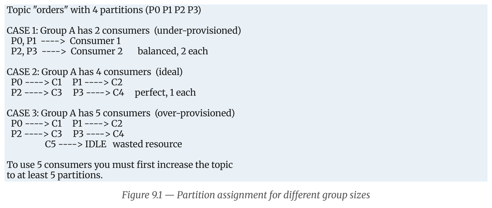
Figure 12.2: Partition assignment across Under-provisioned, Ideal, and Over-provisioned consumer groups.
The Group Leader consumer runs an assignment strategy to determine how partitions are distributed: 1. RangeAssignor: Assigns contiguous ranges of partitions on a per-topic basis. Can cause uneven partition distribution when consuming multiple topics. 2. RoundRobinAssignor: Distributes all partitions from all subscribed topics evenly in round-robin fashion across consumers. 3. StickyAssignor: Balances partitions evenly while minimizing partition reassignments during rebalances. 4. CooperativeStickyAssignor (Modern Best Practice): Uses Cooperative Incremental Rebalancing. Instead of stopping all consumers ("stop-the-world" eager rebalance), only the specific partitions being moved are revoked, allowing unaffected consumers to continue processing.
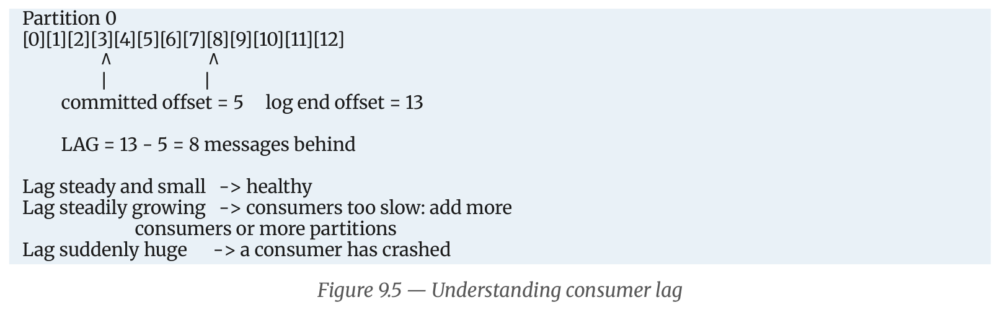
Figure 12.3: Consumer Lag defined as the gap between Log End Offset and Committed Offset.
Question:
Explain the steps involved in setting up a single-node, single-broker Kafka cluster. Also describe the basic operations for creating a topic and producing and consuming messages.
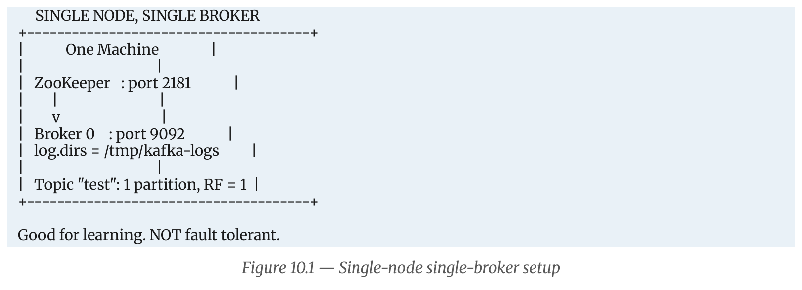
Figure 13.1: Architecture of a single-node, single-broker development environment.
Check that Java is installed and available in the system PATH:
java -version
(Ensure Java version 8, 11, or 17 is displayed).
Download the official binary release (.tgz archive) from kafka.apache.org and extract it:
wget https://downloads.apache.org/kafka/3.7.0/kafka_2.13-3.7.0.tgz
tar -xzf kafka_2.13-3.7.0.tgz
cd kafka_2.13-3.7.0
Start the ZooKeeper coordination service using its default configuration file:
* Linux / macOS:
bash
bin/zookeeper-server-start.sh config/zookeeper.properties
* Windows (Command Prompt / PowerShell):
cmd
bin\windows\zookeeper-server-start.bat config\zookeeper.properties
(ZooKeeper starts and binds to port 2181).
In a second terminal window, start the Kafka broker:
* Linux / macOS:
bash
bin/kafka-server-start.sh config/server.properties
* Windows (Command Prompt / PowerShell):
cmd
bin\windows\kafka-server-start.bat config\server.properties
Verify that the broker started successfully by checking the console logs for:
[KafkaServer id=0] started (kafka.server.KafkaServer)
(The broker is now listening on port 9092).
Alternative: Modern KRaft Mode (No ZooKeeper):
In modern Kafka releases (3.3+), Kafka can run without ZooKeeper: ```bash1. Generate unique cluster ID
KAFKA_CLUSTER_ID="$(bin/kafka-storage.sh random-uuid)"
2. Format storage log directory
bin/kafka-storage.sh format -t $KAFKA_CLUSTER_ID -c config/kraft/server.properties
3. Start broker in KRaft mode
bin/kafka-server-start.sh config/kraft/server.properties ```
Create a topic named orders with 1 partition and a replication factor of 1:
bin/kafka-topics.sh --create --topic orders \
--bootstrap-server localhost:9092 \
--partitions 1 \
--replication-factor 1
Expected Console Output: Created topic orders.
Verify that the topic was created in the cluster:
bin/kafka-topics.sh --list --bootstrap-server localhost:9092
Expected Output: orders
Inspect the topic's partition, leader, replica, and ISR configuration:
bin/kafka-topics.sh --describe --topic orders --bootstrap-server localhost:9092
Expected Console Output:
Topic: orders TopicId: Vz7Q1k... PartitionCount: 1 ReplicationFactor: 1 Configs:
Topic: orders Partition: 0 Leader: 0 Replicas: 0 Isr: 0
Open an interactive console producer in Terminal 3:
bin/kafka-console-producer.sh --topic orders --bootstrap-server localhost:9092
Type messages and press Enter after each line:
> {"order_id": 101, "item": "Laptop", "amount": 45000}
> {"order_id": 102, "item": "Keyboard", "amount": 2500}
> {"order_id": 103, "item": "Monitor", "amount": 18000}
In Terminal 4, start a console consumer configured to read all historical messages from the beginning:
bin/kafka-console-consumer.sh --topic orders \
--bootstrap-server localhost:9092 \
--from-beginning
Output displayed in Consumer Terminal:
{"order_id": 101, "item": "Laptop", "amount": 45000}
{"order_id": 102, "item": "Keyboard", "amount": 2500}
{"order_id": 103, "item": "Monitor", "amount": 18000}
Type a new message into the Producer terminal. It will appear in the Consumer terminal within milliseconds, demonstrating the publish-subscribe messaging pipeline running on a single-node Kafka setup.
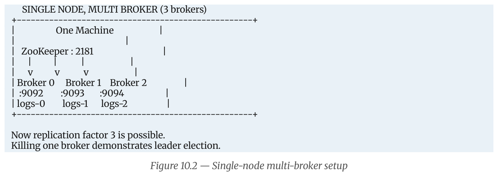
Figure 13.2: Running 3 Kafka brokers on a single machine with separate ports and log directories.
To test partition replication (Replication Factor = 3) on a single physical computer:
1. Create separate configuration files: config/server-1.properties, config/server-2.properties.
2. Configure unique properties:
* Broker 0: broker.id=0, listeners=PLAINTEXT://:9092, log.dirs=/tmp/kafka-logs-0
* Broker 1: broker.id=1, listeners=PLAINTEXT://:9093, log.dirs=/tmp/kafka-logs-1
* Broker 2: broker.id=2, listeners=PLAINTEXT://:9094, log.dirs=/tmp/kafka-logs-2
3. Launch all three brokers in separate terminals.
4. Now create topics with --partitions 3 --replication-factor 3. Killing any single broker demonstrates automatic leader election without downtime or data loss.